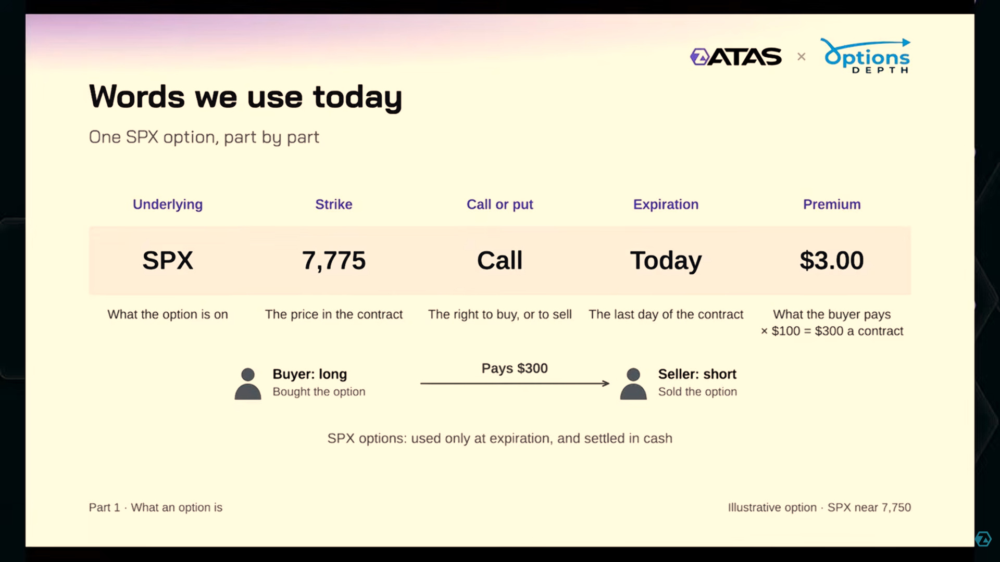
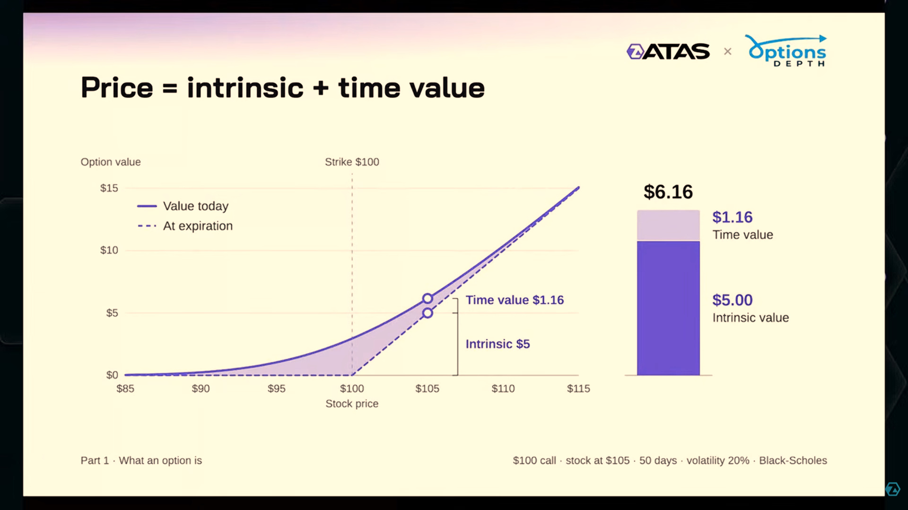
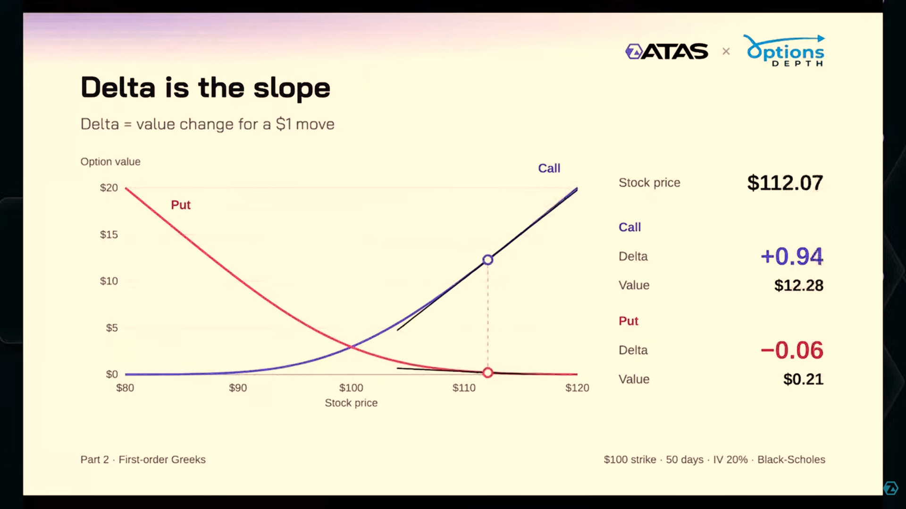
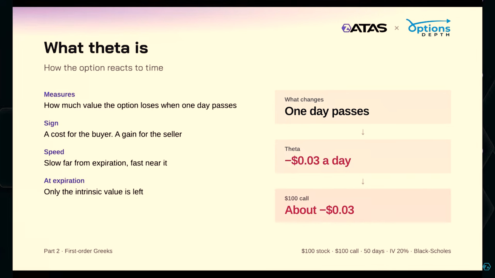
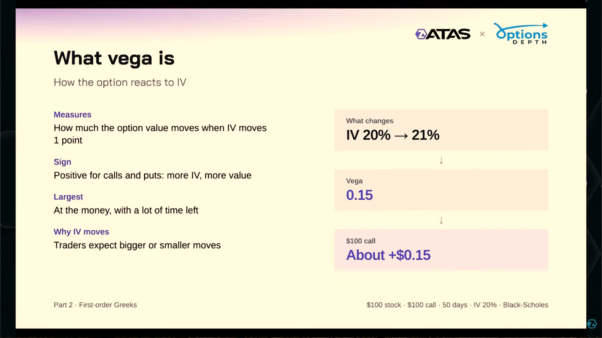
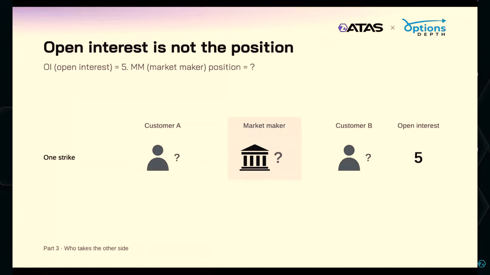
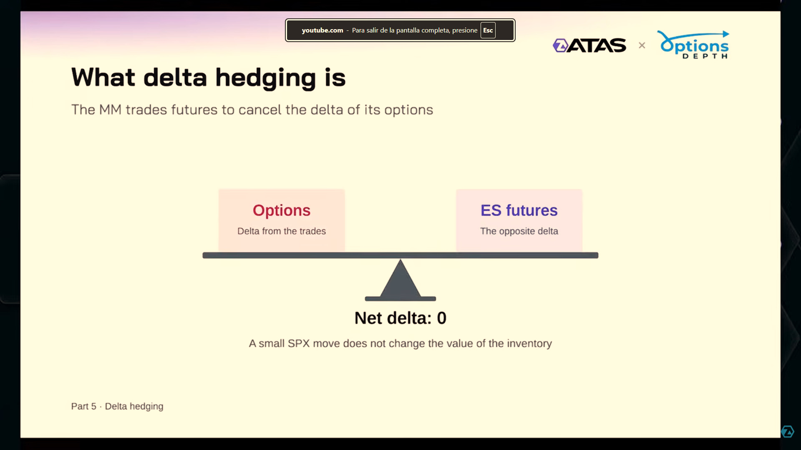
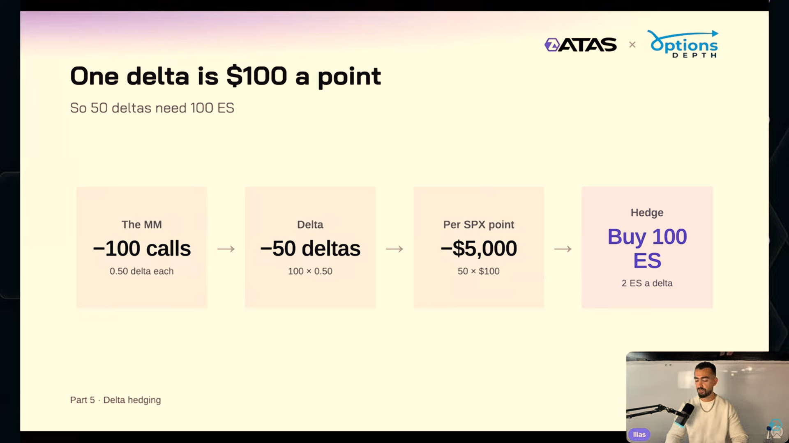
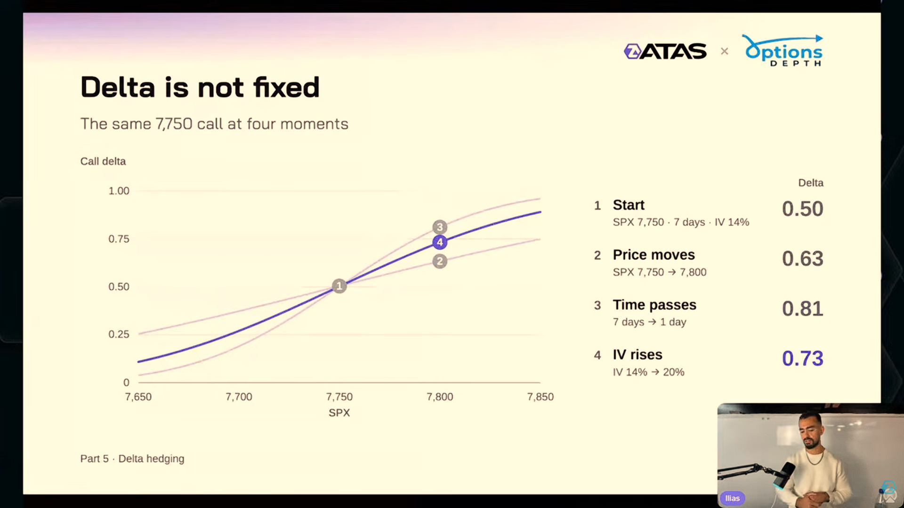
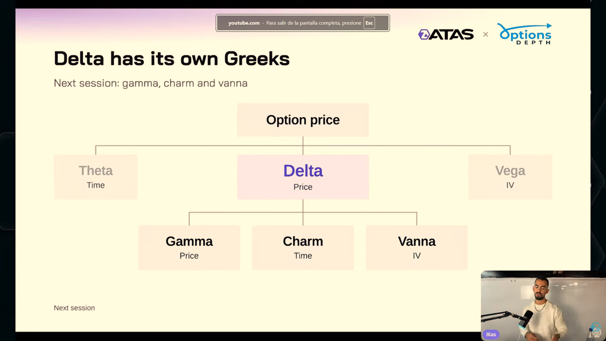

1. La idea central: una cadena de riesgo y cobertura
¿Por qué una operación en opciones puede terminar generando compras o ventas en el mercado del subyacente? La conexión pasa por el riesgo que queda en la cartera de quien proporciona liquidez y por los instrumentos que utiliza para compensarlo.
Esquema propio, sin datos de mercado. El efecto final depende del tamaño neto del reajuste, de la liquidez y del resto del flujo.
El objetivo es comprender esa cadena. El seminario no proporciona aquí una estrategia completa de entradas, invalidación, tamaño y salidas ni demuestra una ventaja estadística. Las sensibilidades ayudan a formular escenarios condicionales; no fijan una trayectoria futura.
Esta sesión desarrolla contratos, valoración, Delta/Theta/Vega, inventario y cobertura. Gamma, Charm y Vanna se definen al cierre; su desarrollo se anuncia para la segunda parte. Las explicaciones adicionales se identifican como ampliaciones.
2. Por qué importa el posicionamiento
Ilias sitúa el argumento en las opciones sobre el S&P 500 y en el crecimiento de los vencimientos diarios. 0DTE significa zero days to expiration: opciones que vencen en esa jornada. Describe el tiempo restante, no una clase distinta de derecho.
El ponente sostiene que un gran inventario, cuyo riesgo cambia dentro de una sesión, puede producir reajustes relevantes en futuros ES. La importancia no se deduce únicamente del número de contratos negociados: hay que saber qué exposición neta dejan, cómo cambia y cuánto representa frente al mercado donde se cubre.
La transcripción menciona más del 66 % de volumen 0DTE, 2,5 billones de dólares de nocional diario y 9,8 millones de contratos en libros de creadores de mercado en un «9 de septiembre». No se han verificado diapositivas, universo, metodología ni año. Son afirmaciones de la sesión, no cifras actuales adoptadas por el proyecto.
Nocional es una magnitud de referencia económica. No equivale a prima pagada, pérdida en riesgo ni dinero que necesariamente se negociará en futuros. Un gran nocional bruto puede coexistir con exposiciones que se compensan.
En vencimientos próximos, pequeñas variaciones pueden alterar mucho ciertas sensibilidades, especialmente cerca del precio de ejercicio. Esto ayuda a entender el interés por 0DTE, sin convertir cada vencimiento diario en una obligación de comprar o vender en una dirección fija.
Lección 1 · Vencimientos diarios · 02:39 · Lección 1 · Volumen y nocional citados · 03:37 · Lección 1 · Escala del inventario · 53:16
3. Call, put y vencimiento
Una opción otorga un derecho al comprador a cambio de una prima. El vendedor asume la obligación contractual correspondiente. El precio de ejercicio (strike, K) fija la referencia; el vencimiento delimita la vida del contrato.
| Contrato comprado | Derecho ilustrativo sobre acciones | Valor intrínseco | Dentro del dinero |
|---|---|---|---|
| Call: opción de compra | Comprar al precio K | máx(S − K, 0) | S > K |
| Put: opción de venta | Vender al precio K | máx(K − S, 0) | S < K |
S es el precio del subyacente. In the money (ITM) significa que existe valor intrínseco; at the money (ATM), que S está cerca de K; out of the money (OTM), que no hay intrínseco. Estar ITM no garantiza beneficio después de pagar la prima.
Call con K = 100 y prima = 3: a vencimiento con S = 110, pago bruto 10 y resultado neto 7 por unidad, antes de costes. Con S ≤ 100, resultado −3. El equilibrio es 103. En una put con K = 100 y prima = 3, S = 90 produce igualmente 7; el equilibrio es 97. Son ejemplos, no cotizaciones verificadas.
Para una opción comprada aislada, perder toda la prima es posible. Una cartera que contiene además acciones u otras posiciones tiene un riesgo distinto. El cobro inicial de una prima por el vendedor tampoco convierte su resultado en ganancia asegurada.
La explicación sobre comprar o vender acciones facilita la intuición, pero SPX se liquida en efectivo y tiene ejercicio europeo: se ejerce al vencimiento. Su multiplicador es 100 dólares por punto; no entrega 100 acciones del índice. Fuentes: especificaciones SPX y Cboe: liquidación y ejercicio.
El ponente contrapone protección de carteras y especulación. Conviene conservar ambas posibilidades: una opción puede servir para cobertura, dirección, volatilidad o una combinación. El tipo de contrato y el strike no revelan por sí solos la intención total del participante.
Lección 1 · Call y prima · 06:52 · Lección 1 · Put y protección · 09:49 · Lección 1 · ITM y OTM · 12:55
Las partes de una opción

- Underlying → Subyacente
- Strike → Precio de ejercicio
- Call or put → Opción de compra o de venta
- Expiration / Today → Vencimiento / hoy
- Premium → Prima
- Buyer: long / Seller: short → Comprador: posición larga / vendedor: posición corta
- Settled in cash → Liquidación en efectivo
La prima de 3 puntos SPX equivale a 300 USD por contrato. Ilustración del instructor.
ILIAS-L1-009 · Material del seminario ATAS × OptionsDepth / Ilias, capturado y aportado por el usuario. Vídeo de la Lección 1. Minutaje de esta captura pendiente de localizar. Original inglés intacto; pulse la imagen para ampliarla.
4. De qué está hecha la prima
La prima no es simplemente la diferencia entre S y K. Antes del vencimiento incorpora también el valor de mantener el derecho mientras pueden cambiar las condiciones. Ilias lo ilustra con un seguro: mayor tiempo y mayor amplitud potencial de movimientos suelen aumentar su valor, manteniendo lo demás constante.
El extrínseco suele llamarse temporal, aunque depende también de la volatilidad y de otras entradas del modelo. En el marco sencillo de la lección desaparece al vencimiento y queda el pago contractual, calculado con el valor de liquidación aplicable.
Call con S = 100, K = 95 y prima = 8: intrínseco 5 y extrínseco 3 por unidad. Call con K = 105 y prima = 2: intrínseco cero, extrínseco 2. OTM no significa «sin valor» antes del vencimiento.
La volatilidad implícita se obtiene del precio
La volatilidad implícita (implied volatility, IV o VI) es el valor de volatilidad que hace compatible la prima observada con un modelo y las demás entradas. Ilias utiliza Black–Scholes como referencia conceptual, sin desarrollar sus matemáticas.
Si cambia la cotización y se mantienen las demás entradas, la IV inferida puede cambiar. Un evento esperado puede encarecer la protección. La IV no es la volatilidad futura realizada ni una predicción segura de dirección. Tampoco basta con observar una subida de prima para atribuirla a IV: puede haber cambiado S.
La sesión se concentra en precio, tiempo e IV. Tipos de interés y otros elementos de valoración no dejan de existir porque se mantengan fuera del foco intradía.
Lección 1 · Valor temporal · 16:31 · Lección 1 · Descomposición del valor · 18:34 · Lección 1 · IV implícita en la prima · 20:49
Prima: intrínseco y valor temporal

- Price = intrinsic + time value → Prima = valor intrínseco + valor temporal
- Option value → Valor de la opción
- Stock price → Precio del subyacente
- Value today / At expiration → Valor hoy / al vencimiento
- Strike → Precio de ejercicio
Ejemplo de la diapositiva: 6,16 = 5,00 + 1,16 por unidad.
ILIAS-L1-010 · Material del seminario ATAS × OptionsDepth / Ilias, capturado y aportado por el usuario. Vídeo de la Lección 1. Minutaje de esta captura pendiente de localizar. Original inglés intacto; pulse la imagen para ampliarla.
5. Delta, Theta y Vega
Los griegos describen la respuesta local del valor de una opción a cambios de las entradas del modelo. Son estimaciones condicionadas, no importes constantes para cualquier movimiento. La sesión desarrolla tres sensibilidades de primer orden. OIC: alcance teórico de los griegos.
| Sensibilidad | Qué cambia | Opción comprada convencional | Confusión que evitar |
|---|---|---|---|
| Delta, Δ | Valor frente al subyacente | Call positiva; put negativa | No es correlación estadística ni precio objetivo |
| Theta, Θ | Valor frente al paso del tiempo | Habitualmente negativo en los ejemplos simples | No garantiza caída diaria de la prima total |
| Vega | Valor frente a IV | Habitualmente positivo | No mide volatilidad realizada |
Delta: la pendiente local
Call con Delta 0,50: gana aproximadamente 0,50 por unidad si S sube 1, manteniendo lo demás constante. Put con Delta −0,50: pierde aproximadamente 5 puntos de prima si el índice sube 10. El instructor pregunta por este último caso.
En el marco convencional, Delta de call comprada suele estar entre 0 y 1; Delta de put, entre −1 y 0. Muy ITM tiende a mayor magnitud; muy OTM, a menor. ATM ≈ 0,50 es una referencia aproximada, no una igualdad universal. Al vender una opción se invierte el signo de la exposición de la posición.
Theta: tiempo que transcurre
El derecho suele perder valor temporal al acercarse el vencimiento. La exposición del vendedor tiene signo contrario. La frase transcrita «todo baja» simplifica el caso convencional: el precio observado también cambia por Delta e IV. El signo de Theta no es una regla universal para cualquier estructura y condición.
Vega: cambio de IV
Una mayor IV suele aumentar el valor de una call o put comprada convencional, a igualdad del resto. Una posición vendida tiene Vega negativo. Muchos proveedores expresan Vega por un punto porcentual de IV; una derivada matemática puede usar volatilidad decimal. Pasar de 20 % a 21 % es +1 punto porcentual, o +0,01 en decimal. Comprueba la unidad antes de multiplicar.
Cambio de prima ≈ Δ × cambio de S + Θ × tiempo transcurrido + Vega × cambio de IV, con unidades compatibles. Es una aproximación para cambios pequeños; omite curvatura y efectos cruzados. Una call puede perder valor aunque S suba si IV cae o el efecto temporal compensa Delta.
Lección 1 · Delta y pendiente · 26:16 · Lección 1 · Ejercicio de la put · 29:32 · Lección 1 · Theta · 31:11 · Lección 1 · Vega · 32:54
Delta es la pendiente

- Delta is the slope → Delta es la pendiente
- Option value / Stock price → Valor de la opción / precio del subyacente
- Value change for a $1 move → Cambio aproximado del valor por un movimiento de 1 USD
- Strike / days / IV → Precio de ejercicio / días restantes / volatilidad implícita
Call +0,94 y put −0,06 en el punto mostrado. Las rectas negras son tangentes locales.
ILIAS-L1-018 · Material del seminario ATAS × OptionsDepth / Ilias, capturado y aportado por el usuario. Vídeo de la Lección 1. Minutaje de esta captura pendiente de localizar. Original inglés intacto; pulse la imagen para ampliarla.
Delta cambia al recorrer la curva
- Delta is the slope → Delta es la pendiente
- Stock price / Option value → Precio del subyacente / valor de la opción
- Call / Put → Opción de compra / opción de venta
- First-order Greeks → Griegos de primer orden
Clip de 14,3 s. Observe cómo cambia la pendiente de las curvas; no es un registro de cotizaciones reales.
ILIAS-L1-019 · Material del seminario ATAS × OptionsDepth / Ilias, capturado y aportado por el usuario. Vídeo de la Lección 1. Minutaje de esta captura pendiente de localizar. Duración 14,3 s; sin reproducción automática. Traducción de rótulos junto al clip; audio no subtitulado.
Theta: valor y tiempo

- What theta is → Qué es Theta
- One day passes → Transcurre un día
- A cost for the buyer. A gain for the seller → Coste para comprador, beneficio para vendedor: efecto temporal aislado
- At expiration → Al vencimiento
La cifra −0,03 corresponde al cambio local de prima por día; no es Charm ni una pérdida total garantizada.
ILIAS-L1-024 · Material del seminario ATAS × OptionsDepth / Ilias, capturado y aportado por el usuario. Vídeo de la Lección 1. Minutaje de esta captura pendiente de localizar. Original inglés intacto; pulse la imagen para ampliarla.
Vega: valor e IV

- What vega is → Qué es Vega
- IV 20% → 21% → La volatilidad implícita sube un punto porcentual
- More IV, more value → Más IV, mayor valor: efecto aislado en opciones ordinarias compradas
- At the money → Cerca del precio de ejercicio
Vega 0,15: incremento aproximado de prima de 0,15 por unidad para +1 punto porcentual de IV.
ILIAS-L1-025 · Material del seminario ATAS × OptionsDepth / Ilias, capturado y aportado por el usuario. Vídeo de la Lección 1. Minutaje de esta captura pendiente de localizar. Original inglés intacto; pulse la imagen para ampliarla.
6. El creador de mercado
Un creador de mercado (market maker, MM) publica precios de compra y venta y facilita la negociación. Bid es el precio al que compra; ask, al que vende. El spread es la diferencia.
Ilias usa bid 2,90 y ask 3,00: diferencial 0,10. Con multiplicador monetario 100, una compra y una venta al mismo tamaño supondrían 10 dólares brutos por contrato. Es una ilustración: costes, cambios de valoración y riesgo de inventario impiden tratarlo como beneficio garantizado.
Si clientes compran más calls de las que otros venden al intermediario, este puede quedar corto de calls. Si recibe ventas, puede acumular opciones largas. Cotizar a ambos lados no asegura equilibrio: permanece un inventario residual cuyo riesgo debe gestionar.
Para la conexión con futuros importa la exposición neta de la cartera. Una operación visible no identifica el balance completo ni la cobertura de una firma. En preguntas y respuestas, el ponente admite que no puede saberse qué creador concreto hará el movimiento.
Lección 1 · Contraparte y diferencial · 35:56 · Lección 1 · Inventario residual · 38:08 · Lección 1 · Exposición agregada · 01:01:44
7. Volumen, interés abierto y posición
| Dato | Qué responde | Qué no identifica por sí solo |
|---|---|---|
| Volumen | Contratos negociados durante un periodo | Inventario final, aperturas/cierres y exposición neta MM |
| Interés abierto, OI | Contratos que permanecen abiertos | Qué grupo es largo o corto |
| Posición por participante | Quién mantiene qué exposición, dentro del ámbito del dato | Otras carteras y ejecución futura exacta |
Comprar y cerrar una posición aumenta el volumen sin dejar el mismo inventario final. El OI cuenta cada contrato una vez, aunque tenga lado largo y corto; no hay que sumar ambos como dos contratos.
| Posiciones finales | MM | OI |
|---|---|---|
| Cliente largo 5; MM corto 5 | −5 | 5 |
| Cliente A corto 5; cliente B largo 5 | 0 | 5 |
| Cliente corto 5; MM largo 5 | +5 | 5 |
El mismo OI admite signos distintos o ausencia de posición MM. Aplicar un griego a OI sin hipótesis de asignación no revela automáticamente su exposición.
En 40:53 aparece «tendrán que mirar el volumen», mientras el resumen de 42:46 dice que ni volumen ni OI muestran la posición. El SRT permanece intacto. La explicación se apoya en el ejemplo y resumen posterior: ninguno basta por sí solo. La frase aislada queda pendiente de cotejo con audio.
Qué añaden los datos de posición
El proveedor presentado por Ilias afirma utilizar datos de Cboe etiquetados por participante. Esa identificación puede reducir hipótesis frente a modelos que asignan calls o puts automáticamente a intermediarios, o infieren el comprador por ejecución en bid/ask.
La palabra «real» no elimina preguntas de calidad: bolsas y productos cubiertos, distinción apertura/cierre, reconstrucción de inventarios, desfase y exposiciones externas omitidas. El seminario no permite auditar esa reconstrucción ni comprobar independientemente su exactitud. Los modelos basados en OI pueden servir como estimaciones explícitas; no como observación completa.
Lección 1 · Volumen y OI · 39:14 · Lección 1 · Tres posiciones con el mismo OI · 41:00 · Lección 1 · Datos etiquetados por participante · 57:50
La captura ILIAS-L1-031 confirma «Open interest is not the position». El banco también contiene un resumen visual que distingue OI y volumen de posición. Se conserva la incidencia de reconocimiento automático descrita en el texto; la imagen apoya la distinción conceptual, sin auditar el audio completo.
El interés abierto no revela la posición

- Open interest is not the position → El interés abierto no es la posición
- Customer A / Customer B → Cliente A / cliente B
- Market maker → Creador de mercado
- One strike → Un precio de ejercicio
OI = 5 no determina el signo ni el tamaño del inventario del creador de mercado.
ILIAS-L1-031 · Material del seminario ATAS × OptionsDepth / Ilias, capturado y aportado por el usuario. Vídeo de la Lección 1. Minutaje de esta captura pendiente de localizar. Original inglés intacto; pulse la imagen para ampliarla.
8. Cobertura Delta y unidades
La cobertura Delta (delta hedging) añade una posición que compensa aproximadamente el riesgo de primer orden frente al precio. En SPX/ES, una cartera con Delta monetario negativo necesita cobertura positiva; una con Delta positivo, negativa.
| Posición MM aislada | Delta | Cobertura ilustrativa |
|---|---|---|
| Compra call | Positivo | Vende futuros |
| Vende call | Negativo | Compra futuros |
| Compra put | Negativo | Compra futuros |
| Vende put | Positivo | Vende futuros |
Para el libro completo hay que sumar posiciones y coberturas existentes. «Compran calls» debe indicar quién compra: cliente e intermediario tienen signos opuestos en la operación ilustrada.
100 calls SPX vendidas y 100 ES de cobertura
El instructor plantea 100 calls con Delta 0,50 compradas por el cliente y vendidas por el MM. Reorganizamos las unidades:
Cobertura: +100 ES × 50 USD/punto = +5.000 USD/punto
Exposición neta local ≈ 0 USD/punto
SPX tiene multiplicador 100; ES, 50 dólares por punto. Una unidad de Delta agregada SPX corresponde aproximadamente a dos ES, suponiendo movimiento uno a uno entre índice y futuro. No se traslada esa proporción a otros contratos. Fuentes: Cboe SPX y CME ES.
Delta neutral es neutralidad local y aproximada en ese instante. Persisten curvatura, volatilidad, costes, desfase y riesgo de base. Los ajustes pueden agruparse, compensarse o sujetarse a umbrales. La cobertura instantánea afirmada por el ponente no acredita una orden individual inmediata por cada operación visible.
Explora el signo de la cobertura
Modelo SPX/ES: multiplica por 100 y divide por 50. Omite otras posiciones, costes y riesgo de base. El resultado puede ser fraccionario; no es una orden ejecutable.
Lección 1 · Riesgo de 100 calls vendidas · 44:52 · Lección 1 · Cobertura Delta · 46:08 · Lección 1 · Conversión SPX/ES · 48:46
Equilibrar Delta con futuros

- What delta hedging is → Qué es la cobertura Delta
- Options / ES futures → Opciones / futuros ES
- The opposite delta → Delta de signo contrario
- Net delta: 0 → Delta neto: cero
Neutralidad local: no elimina Gamma, Vega, cambios de inventario ni costes de cobertura.
ILIAS-L1-039 · Material del seminario ATAS × OptionsDepth / Ilias, capturado y aportado por el usuario. Vídeo de la Lección 1. Minutaje de esta captura pendiente de localizar. Original inglés intacto; pulse la imagen para ampliarla.
De Delta SPX a contratos ES

- One delta is $100 a point → Una unidad Delta SPX representa 100 USD por punto
- Per SPX point → Por punto SPX
- Hedge / Buy 100 ES → Cobertura / comprar 100 ES
- 2 ES a delta → Dos ES por unidad Delta SPX
−100 calls × 0,50 × 100 = −5.000 USD/punto. Cobertura +100 ES × 50 = +5.000.
ILIAS-L1-042 · Material del seminario ATAS × OptionsDepth / Ilias, capturado y aportado por el usuario. Vídeo de la Lección 1. Minutaje de esta captura pendiente de localizar. Original inglés intacto; pulse la imagen para ampliarla.
9. Gamma, Charm y Vanna: por qué cambia la cobertura
Aunque esté cubierta ahora, la Delta de una cartera puede variar al moverse S, transcurrir el tiempo o cambiar IV. La operación original no necesita repetirse para que aparezca una nueva necesidad de cobertura. Es el puente a la segunda sesión.
| Sensibilidad de Delta | Variable | Pregunta |
|---|---|---|
| Gamma | Precio del subyacente | ¿Cuánto cambia Delta al moverse S? |
| Charm | Tiempo | ¿Cómo cambia Delta al avanzar hacia el vencimiento? |
| Vanna | IV | ¿Cuánto cambia Delta si cambia IV? |
Localmente: cambio de Delta ≈ Gamma × cambio de S + Charm × cambio de tiempo + Vanna × cambio de IV. Comprueba si Charm se define respecto a tiempo transcurrido o restante: el signo se invierte. Vanna también exige compatibilidad entre IV decimal y puntos porcentuales. No es un modelo completo de cobertura.
Gamma y la dirección del reajuste
Con Gamma positivo, una subida aumenta Delta: para neutralizarla, el intermediario vende cobertura. Una bajada reduce Delta: compra. Esto puede amortiguar movimientos. Con Gamma negativo compra tras subidas y vende tras bajadas, pudiendo reforzarlos. Es una ampliación didáctica del mecanismo anunciado, manteniendo lo demás constante.
El MM corto de 100 calls pasa de Delta por opción 0,50 a 0,60. Su exposición pasa de −5.000 a −6.000 USD/punto. Los 100 ES iniciales aportan +5.000: faltan +1.000, equivalentes a comprar 20 ES adicionales. Si Delta baja de 0,50 a 0,40, vende 20 ES. No se supone un Gamma numérico ni un movimiento concreto de precio.
Charm y Vanna
El paso del tiempo o el cambio de IV pueden alterar Delta sin nueva operación de opciones. No hay una dirección universal de cobertura asociada a Charm o Vanna: depende de las sensibilidades de la cartera. Las tres fuerzas pueden actuar a la vez y compensarse.
Importa el signo del inventario MM, no solo el de una opción comprada. Gamma y exposición Gamma agregada (gamma exposure, GEX) tampoco son lo mismo: GEX incorpora posiciones, multiplicadores y convenciones del proveedor.
Lección 1 · Delta no constante · 51:36 · Lección 1 · Gamma, Charm y Vanna · 57:17
La misma opción en cuatro estados

- Delta is not fixed → Delta no es fijo
- Start / Price moves → Inicio / cambia el precio
- Time passes / IV rises → Transcurre el tiempo / sube la IV
- Call delta → Delta de la call
El ejemplo cambia Delta de 0,50 a 0,63, 0,81 y 0,73. Es ilustrativo; cada paso altera una entrada.
ILIAS-L1-047 · Material del seminario ATAS × OptionsDepth / Ilias, capturado y aportado por el usuario. Vídeo de la Lección 1. Minutaje de esta captura pendiente de localizar. Original inglés intacto; pulse la imagen para ampliarla.
Delta también tiene sensibilidades

- Delta has its own Greeks → Delta tiene sus propias sensibilidades
- Option price → Prima de la opción
- Price / Time / IV → Precio / tiempo / volatilidad implícita
- Next session → Próxima sesión
Gamma, Charm y Vanna son el puente hacia la Lección 2.
ILIAS-L1-054 · Material del seminario ATAS × OptionsDepth / Ilias, capturado y aportado por el usuario. Vídeo de la Lección 1. Minutaje de esta captura pendiente de localizar. Original inglés intacto; pulse la imagen para ampliarla.
10. Del modelo al contexto de mercado
El libro de órdenes implícito describe la idea de estimar necesidades de cobertura ante distintos estados de mercado. No equivale a órdenes límite visibles en el DOM (depth of market, profundidad de mercado). Ilias aclara que esas órdenes pueden no estar presentes antes de que cambien las condiciones.
Con posiciones estimadas y un modelo, la pregunta útil es: «Si el precio llega a esta zona o cambia IV, ¿qué reajuste sería compatible con esa cartera?». El flujo efectivo depende de otras posiciones, políticas de cobertura y participantes. Una transacción ES, un footprint o el delta de volumen no identifican por sí solos una cobertura de opciones.
Anticipar soporte, resistencia o aceleración son afirmaciones del ponente. El mecanismo permite hipótesis de presión condicional; su precisión y utilidad requieren datos y pruebas adicionales. La transcripción no demuestra que una zona frene el precio ni que todo movimiento ES lo causen las opciones.
Ficha de observación propuesta
- Delimitar el dato: producto, vencimientos, proveedor, actualización y ámbito.
- Identificar exposición: signo neto, unidad y cómo se obtuvo la posición MM.
- Plantear el cambio: precio, tiempo o IV y entradas constantes.
- Derivar el ajuste: si Delta neto aumenta, la cobertura objetivo disminuye; si cae, aumenta.
- Comparar con lo observado: flujo, liquidez y precio; registrar también ausencia de reacción y casos opuestos.
- Revisar sin sesgo retrospectivo: conservar el escenario formulado antes del resultado.
Esta ficha es una ampliación de estudio, no un protocolo de operación. Sobre Nasdaq, Ilias dice no conocer un proveedor con el mismo posicionamiento observado para NDX y desaconseja trasladar sin más datos SPX a ejecución NQ. Es una declaración histórica de conocimiento, no un inventario actual. La correlación entre índices no permite intercambiar sensibilidades o contratos.
Las referencias beta en ATAS tampoco acreditan disponibilidad actual. El estudio no prescribe configuración ni inicia pruebas en cuentas.
Lección 1 · Proyección con posiciones · 55:51 · Lección 1 · Límites NDX/NQ · 01:04:15 · Lección 1 · Órdenes implícitas y visibles · 01:06:58
11. Ejercicios y taller
Preguntas preparadas para este estudio. Los cálculos omiten costes y usan aproximaciones locales.
1 · Put con Delta −0,50; S sube 10. ¿Qué efecto Delta esperas?
−5 puntos de prima aproximadamente. Es el ejercicio de la sesión. Con multiplicador 100: −500 USD por opción comprada. Gamma, IV y tiempo pueden alterar el resultado real.
2 · Call ITM al vencer: K = 100, S = 102, prima = 3. ¿Hay beneficio?
No. Pago bruto 2 y resultado neto −1 por unidad. ITM describe intrínseco, no rentabilidad.
3 · OI = 5. ¿El MM está corto de cinco?
No se sabe: puede estar corto 5, plano o largo 5. Necesitas participantes y posiciones.
4 · MM compra puts. ¿Qué cobertura aislada compensa Delta?
Compra futuros: put larga aporta Delta negativo y futuro comprado, positivo. Comprueba antes el libro completo.
5 · ¿Theta y Charm miden lo mismo?
Theta mide cambio del valor por el tiempo; Charm mide cambio de Delta por el tiempo. Fija la convención temporal antes de interpretar el signo.
6 · Un mapa proyecta compras de cobertura. ¿Son órdenes límite ya puestas?
No necesariamente. Dependen de posiciones y modelo, y pueden aparecer solo al cambiar el estado. Tampoco aseguran una subida: importa el resto del flujo.
De la posición al reajuste
MM corto de 80 calls SPX. Delta = 0,25; multiplicador = 100 USD/punto; ES = 50 USD/punto. Después Delta sube a 0,40. Mantén constantes el número de opciones y otras exposiciones.
- Calcula exposición inicial y cobertura ES.
- Calcula nueva exposición y ajuste adicional.
- ¿Qué faltaría para atribuir una compra observada al mecanismo?
Ver solución razonada
Inicial: −80 × 0,25 × 100 = −2.000 USD/punto; cobertura +40 ES. Después: −80 × 0,40 × 100 = −3.200; objetivo +64 ES. Ajuste: comprar 24 ES (+1.200 USD/punto). Para atribuir una compra real necesitas confirmar que el inventario existe y sigue vigente, conocer otras posiciones/coberturas y evidencia de ejecución. El cálculo no identifica al comprador de la cinta.
Resultado de aprendizaje: explicar contrato → posición → Delta neto → cobertura → cambio de Delta → reajuste, separando observación, modelo e hipótesis.
12. Glosario, fuentes y continuidad
| Término | Significado |
|---|---|
| Underlying · subyacente | Activo o índice de referencia |
| Strike / premium | Precio de ejercicio / prima |
| Expiration / DTE | Vencimiento / días hasta el vencimiento |
| Moneyness | Relación precio–strike: ITM, ATM u OTM |
| IV · volatilidad implícita | Volatilidad inferida de prima mediante un modelo |
| Market maker / dealer | Proveedor de liquidez cuyo inventario se analiza |
| Bid / ask / spread | Compra / venta / diferencia de cotizaciones |
| Open interest · OI | Contratos abiertos, no exposición de un grupo |
| Delta neutral | Exposición direccional local compensada |
| GEX | Exposición Gamma agregada según posiciones y convenciones |
| Delta de opciones / delta de volumen | Sensibilidad al precio / diferencia de volumen clasificado comprador y vendedor: magnitudes distintas |
Fuente principal
Market Mechanics & Connecting Options to Price Action · YouTube, URL aportada. Fuente en YouTube; transcripción conservada en el archivo del proyecto, español automático, 1.486 entradas; primera marca 00:00:18,440 y última 01:11:40,850. Los extremos no certifican duración ni integridad audiovisual.
Contenido reorganizado y parafraseado, reduciendo repetición y promoción. Original intacto. Nombres, cifras y la frase contradictoria sobre volumen pendientes de cotejo. La segunda sesión está incorporada en el estudio de la Lección 2.
Contraste puntual · consulta 09/10/2026
- OIC / OCC · Understanding Options Greeks: alcance estimativo.
- Cboe · SPX/SPXW: multiplicador.
- Cboe · Opciones sobre índices: efectivo y ejercicio europeo.
- CME · E-mini S&P 500: multiplicador ES.
Estas fuentes acotan definiciones y unidades; no validan datos comerciales ni eficacia predictiva del proveedor. El artículo SqueezeMetrics mencionado en 05:47 no se ha identificado ni usado como fuente contrastada.
Materiales relacionados
Curso ATAS archivado: lecciones 1–3 para contrato y sensibilidades, 4–5 para MM/OI y 9–11 para datos y cambios de Delta. Relación temática añadida; fuentes y numeraciones no son intercambiables.
Versión maestra: este HTML. Registro de seminarios (registro interno del proyecto) · Índice documental (registro interno del proyecto). Continuidad: Lección 2 incorporada con desarrollo de Gamma, Charm, Vanna y proyecciones.